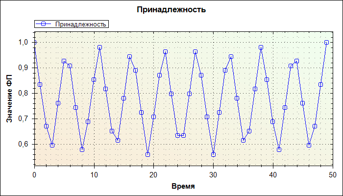

График заданного верменного ряда

Таблица внутренних и внешних ошибок
| MSE | RMSE | MAPE | R2 |
|---|
| 1 | 1 | 6.7324374780263279 | 0.99350649350649356 |
| 11 | 3.3166247903554 | 6.1684994997073765 | -4.5 |
| FPE | FCE | TTend FPE | TTend FCE | RTend FPE | RTend FCE |
|---|
| 18.6046511627907 | 8/43 | 0 | 0/44 | 0 | 0/44 |
| 60 | 3/5 | 0 | 0/5 | 0 | 0/5 |
Информация о модели:
T Модель (F1N),
Порядок: 1,
Разбиение ряда (точки): 5,
Глубина прогноза: 5,
F преобразование: Нет,
Модель остатков: отсутсвует
Информация о шкале:
Количество нечетких термов: 10
График принадлежности точек временного ряда соответсвущим нечетким множествам

График центров нечетких множеств нечеткого временного ряда

График ряда разностей

График Тенденций

График интенсивностей

График ряда разностей - модель

График ошибок модели

График относительных ошибок модели

Результаты применения модели
| Время | Ряд | Модель | Ошибка | Отн. Ошибка | Разность | Модель Разность |
|---|
| 0 | 1 | 1 | 0 | 0 | 1 | 0 |
| 1 | 2 | 2 | 0 | 0 | 1 | 3,05734736204378E-17 |
| 2 | 3 | 2 | 0,333333333333333 | -1 | 1 | 3,05734736204378E-17 |
| 3 | 4 | 3 | 0,25 | -1 | 1 | 5,21380771064424E-19 |
| 4 | 5 | 4 | 0,2 | -1 | 1 | 3,05734736204378E-17 |
| 5 | 6 | 5 | 0,166666666666667 | -1 | 1 | 3,05734736204378E-17 |
| 6 | 7 | 6 | 0,142857142857143 | -1 | 1 | 3,05734736204378E-17 |
| 7 | 8 | 7 | 0,125 | -1 | 1 | 3,05734736204378E-17 |
| 8 | 9 | 8 | 0,111111111111111 | -1 | 1 | 3,05734736204378E-17 |
| 9 | 10 | 9 | 0,1 | -1 | 1 | 5,21380771064424E-19 |
| 10 | 11 | 10 | 0,0909090909090909 | -1 | 1 | 3,05734736204378E-17 |
| 11 | 12 | 11 | 0,0833333333333333 | -1 | 1 | 3,05734736204378E-17 |
| 12 | 13 | 12 | 0,0769230769230769 | -1 | 1 | 3,05734736204378E-17 |
| 13 | 14 | 13 | 0,0714285714285714 | -1 | 1 | 3,05734736204378E-17 |
| 14 | 15 | 14 | 0,0666666666666667 | -1 | 1 | 5,21380771064424E-19 |
| 15 | 16 | 15 | 0,0625 | -1 | 1 | 3,05734736204378E-17 |
| 16 | 17 | 16 | 0,0588235294117647 | -1 | 1 | 3,05734736204378E-17 |
| 17 | 18 | 17 | 0,0555555555555556 | -1 | 1 | 3,05734736204378E-17 |
| 18 | 19 | 18 | 0,0526315789473684 | -1 | 1 | 3,05734736204378E-17 |
| 19 | 20 | 19 | 0,05 | -1 | 1 | 3,05734736204378E-17 |
| 20 | 21 | 20 | 0,0476190476190476 | -1 | 1 | 5,21380771064424E-19 |
| 21 | 22 | 21 | 0,0454545454545455 | -1 | 1 | 3,05734736204378E-17 |
| 22 | 23 | 22 | 0,0434782608695652 | -1 | 1 | 3,05734736204378E-17 |
| 23 | 24 | 23 | 0,0416666666666667 | -1 | 1 | 3,05734736204378E-17 |
| 24 | 25 | 24 | 0,04 | -1 | 1 | 3,05734736204378E-17 |
| 25 | 26 | 25 | 0,0384615384615385 | -1 | 1 | 5,21380771064424E-19 |
| 26 | 27 | 26 | 0,037037037037037 | -1 | 1 | 3,05734736204378E-17 |
| 27 | 28 | 27 | 0,0357142857142857 | -1 | 1 | 3,05734736204378E-17 |
| 28 | 29 | 28 | 0,0344827586206897 | -1 | 1 | 3,05734736204378E-17 |
| 29 | 30 | 29 | 0,0333333333333333 | -1 | 1 | 3,05734736204378E-17 |
| 30 | 31 | 30 | 0,032258064516129 | -1 | 1 | 5,21380771064424E-19 |
| 31 | 32 | 31 | 0,03125 | -1 | 1 | 3,05734736204378E-17 |
| 32 | 33 | 32 | 0,0303030303030303 | -1 | 1 | 3,05734736204378E-17 |
| 33 | 34 | 33 | 0,0294117647058824 | -1 | 1 | 3,05734736204378E-17 |
| 34 | 35 | 34 | 0,0285714285714286 | -1 | 1 | 3,05734736204378E-17 |
| 35 | 36 | 35 | 0,0277777777777778 | -1 | 1 | 3,05734736204378E-17 |
| 36 | 37 | 36 | 0,027027027027027 | -1 | 1 | 5,21380771064424E-19 |
| 37 | 38 | 37 | 0,0263157894736842 | -1 | 1 | 3,05734736204378E-17 |
| 38 | 39 | 38 | 0,0256410256410256 | -1 | 1 | 3,05734736204378E-17 |
| 39 | 40 | 39 | 0,025 | -1 | 1 | 3,05734736204378E-17 |
| 40 | 41 | 40 | 0,024390243902439 | -1 | 1 | 3,05734736204378E-17 |
| 41 | 42 | 41 | 0,0238095238095238 | -1 | 1 | 5,21380771064424E-19 |
| 42 | 43 | 42 | 0,0232558139534884 | -1 | 1 | 3,05734736204378E-17 |
| 43 | 44 | 43 | 0,0227272727272727 | -1 | 1 | 3,05734736204378E-17 |
| 44 | 45 | 44 | 0,0222222222222222 | -1 | 1 | 3,05734736204378E-17 |
| 45 | 46 | 45 | 0,0217391304347826 | -1 | 1 | 2,51995565186783E-17 |
| 46 | 47 | 45 | 0,0425531914893617 | -2 | 1 | 2,64162349373422E-17 |
| 47 | 48 | 45 | 0,0625 | -3 | 1 | 2,61519026096306E-17 |
| 48 | 49 | 45 | 0,0816326530612245 | -4 | 1 | 2,62098797420653E-17 |
| 49 | 50 | 45 | 0,1 | -5 | нет | нет |
| Время | Ряд | ФП | НМ | Модель НМ | Ошибка | TTend | Модель TTend | Ошибка | RTend | Модель RTend | Ошибка |
|---|
| 0 | 1 | 1,00 | A0 | A0 | 0 | Стабильность | Стабильность | 0 | R0 | R0 | 0 |
| 1 | 2 | 0,83 | A0 | A0 | 0 | Стабильность | Стабильность | 0 | R0 | R0 | 0 |
| 2 | 3 | 0,67 | A0 | A0 | 0 | Стабильность | Стабильность | 0 | R0 | R0 | 0 |
| 3 | 4 | 0,60 | A1 | A0 | 1 | Стабильность | Стабильность | 0 | R0 | R0 | 0 |
| 4 | 5 | 0,76 | A1 | A1 | 0 | Стабильность | Стабильность | 0 | R0 | R0 | 0 |
| 5 | 6 | 0,93 | A1 | A1 | 0 | Стабильность | Стабильность | 0 | R0 | R0 | 0 |
| 6 | 7 | 0,91 | A1 | A1 | 0 | Стабильность | Стабильность | 0 | R0 | R0 | 0 |
| 7 | 8 | 0,74 | A1 | A1 | 0 | Стабильность | Стабильность | 0 | R0 | R0 | 0 |
| 8 | 9 | 0,58 | A1 | A1 | 0 | Стабильность | Стабильность | 0 | R0 | R0 | 0 |
| 9 | 10 | 0,69 | A2 | A1 | 1 | Стабильность | Стабильность | 0 | R0 | R0 | 0 |
| 10 | 11 | 0,85 | A2 | A2 | 0 | Стабильность | Стабильность | 0 | R0 | R0 | 0 |
| 11 | 12 | 0,98 | A2 | A2 | 0 | Стабильность | Стабильность | 0 | R0 | R0 | 0 |
| 12 | 13 | 0,82 | A2 | A2 | 0 | Стабильность | Стабильность | 0 | R0 | R0 | 0 |
| 13 | 14 | 0,65 | A2 | A2 | 0 | Стабильность | Стабильность | 0 | R0 | R0 | 0 |
| 14 | 15 | 0,61 | A3 | A2 | 1 | Стабильность | Стабильность | 0 | R0 | R0 | 0 |
| 15 | 16 | 0,78 | A3 | A3 | 0 | Стабильность | Стабильность | 0 | R0 | R0 | 0 |
| 16 | 17 | 0,94 | A3 | A3 | 0 | Стабильность | Стабильность | 0 | R0 | R0 | 0 |
| 17 | 18 | 0,89 | A3 | A3 | 0 | Стабильность | Стабильность | 0 | R0 | R0 | 0 |
| 18 | 19 | 0,72 | A3 | A3 | 0 | Стабильность | Стабильность | 0 | R0 | R0 | 0 |
| 19 | 20 | 0,56 | A3 | A3 | 0 | Стабильность | Стабильность | 0 | R0 | R0 | 0 |
| 20 | 21 | 0,71 | A4 | A3 | 1 | Стабильность | Стабильность | 0 | R0 | R0 | 0 |
| 21 | 22 | 0,87 | A4 | A4 | 0 | Стабильность | Стабильность | 0 | R0 | R0 | 0 |
| 22 | 23 | 0,96 | A4 | A4 | 0 | Стабильность | Стабильность | 0 | R0 | R0 | 0 |
| 23 | 24 | 0,80 | A4 | A4 | 0 | Стабильность | Стабильность | 0 | R0 | R0 | 0 |
| 24 | 25 | 0,63 | A4 | A4 | 0 | Стабильность | Стабильность | 0 | R0 | R0 | 0 |
| 25 | 26 | 0,63 | A5 | A4 | 1 | Стабильность | Стабильность | 0 | R0 | R0 | 0 |
| 26 | 27 | 0,80 | A5 | A5 | 0 | Стабильность | Стабильность | 0 | R0 | R0 | 0 |
| 27 | 28 | 0,96 | A5 | A5 | 0 | Стабильность | Стабильность | 0 | R0 | R0 | 0 |
| 28 | 29 | 0,87 | A5 | A5 | 0 | Стабильность | Стабильность | 0 | R0 | R0 | 0 |
| 29 | 30 | 0,71 | A5 | A5 | 0 | Стабильность | Стабильность | 0 | R0 | R0 | 0 |
| 30 | 31 | 0,56 | A6 | A5 | 1 | Стабильность | Стабильность | 0 | R0 | R0 | 0 |
| 31 | 32 | 0,72 | A6 | A6 | 0 | Стабильность | Стабильность | 0 | R0 | R0 | 0 |
| 32 | 33 | 0,89 | A6 | A6 | 0 | Стабильность | Стабильность | 0 | R0 | R0 | 0 |
| 33 | 34 | 0,94 | A6 | A6 | 0 | Стабильность | Стабильность | 0 | R0 | R0 | 0 |
| 34 | 35 | 0,78 | A6 | A6 | 0 | Стабильность | Стабильность | 0 | R0 | R0 | 0 |
| 35 | 36 | 0,61 | A6 | A6 | 0 | Стабильность | Стабильность | 0 | R0 | R0 | 0 |
| 36 | 37 | 0,65 | A7 | A6 | 1 | Стабильность | Стабильность | 0 | R0 | R0 | 0 |
| 37 | 38 | 0,82 | A7 | A7 | 0 | Стабильность | Стабильность | 0 | R0 | R0 | 0 |
| 38 | 39 | 0,98 | A7 | A7 | 0 | Стабильность | Стабильность | 0 | R0 | R0 | 0 |
| 39 | 40 | 0,85 | A7 | A7 | 0 | Стабильность | Стабильность | 0 | R0 | R0 | 0 |
| 40 | 41 | 0,69 | A7 | A7 | 0 | Стабильность | Стабильность | 0 | R0 | R0 | 0 |
| 41 | 42 | 0,58 | A8 | A7 | 1 | Стабильность | Стабильность | 0 | R0 | R0 | 0 |
| 42 | 43 | 0,74 | A8 | A8 | 0 | Стабильность | Стабильность | 0 | R0 | R0 | 0 |
| 43 | 44 | 0,91 | A8 | A8 | 0 | Стабильность | Стабильность | 0 | R0 | R0 | 0 |
| 44 | 45 | 0,93 | A8 | A8 | 0 | Стабильность | Стабильность | 0 | R0 | R0 | 0 |
| 45 | 46 | 0,76 | A8 | A8 | 0 | Стабильность | Стабильность | 0 | R0 | R0 | 0 |
| 46 | 47 | 0,60 | A8 | A8 | 0 | Стабильность | Стабильность | 0 | R0 | R0 | 0 |
| 47 | 48 | 0,67 | A9 | A8 | 1 | Стабильность | Стабильность | 0 | R0 | R0 | 0 |
| 48 | 49 | 0,83 | A9 | A8 | 1 | Стабильность | Стабильность | 0 | R0 | R0 | 0 |
| 49 | 50 | 1,00 | A9 | A8 | 1 | | | | | | |
Таблица правил для Типов Тенденций
Таблица правил для Интенвивностей Тенденций
Таблица правил для Типов Тенденций
Таблица правил для Интенвивностей Тенденций